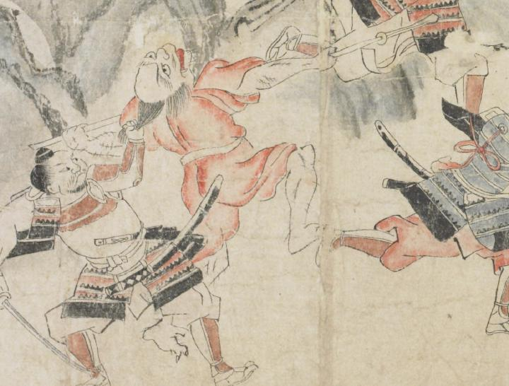

赤い着物を着た鬼。額が広く、髪は散切りである。口ひげと顎ひげを生やし、上顎から牙が覗いている。両腕を開いて矛を掴んでいる。武士に、背後から髪を引っ張られている。
著作者：坂本弥一郎徳定／出典：親書誌：U426_nichibunken_0080：伊吹山酒呑童子絵巻；イブキヤマシュテンドウジエマキ／日付：2007／資源識別子：U426_nichibunken_0080_0012_0003
Copyright (c)2010- International Research Center for Japanese Studies, Kyoto, Japan. All rights reserved.